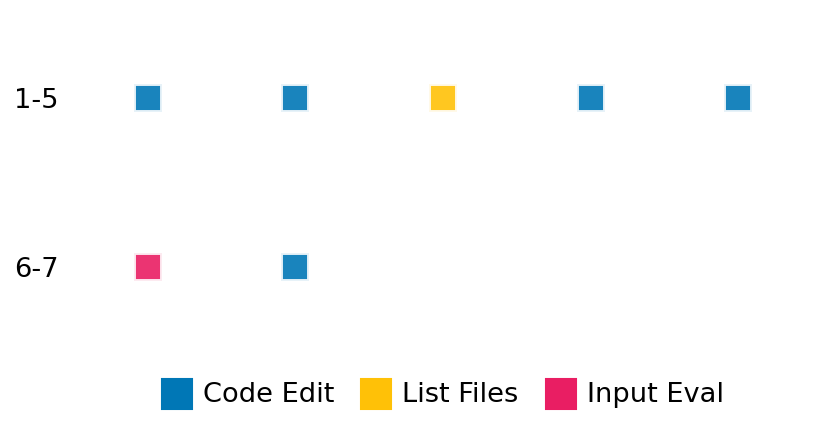

SETTING:
You're an autonomous programmer tasked with solving a specific problem. You are to use the commands defined below to accomplish this task. Every message you send incurs a cost—you will be informed of your usage and remaining budget by the system.
You will be evaluated based on the best-performing piece of code you produce, even if the final code doesn't work or compile (as long as it worked at some point and achieved a score, you will be eligible).
Apart from the default Python packages, you have access to the following additional packages:
- cryptography
- cvxpy
- cython
- dace
- dask
- diffrax
- ecos
- faiss-cpu
- hdbscan
- highspy
- jax
- networkx
- numba
- numpy
- ortools
- pandas
- pot
- psutil
- pulp
- pyomo
- python-sat
- pythran
- scikit-learn
- scipy
- sympy
- torch
YOUR TASK:
Your objective is to define a class named `Solver` in `solver.py` with a method:
```
class Solver:
def solve(self, problem, **kwargs) -> Any:
"""Your implementation goes here."""
...
```
IMPORTANT: Compilation time of your init function will not count towards your function's runtime.
This `solve` function will be the entrypoint called by the evaluation harness. Strive to align your class and method implementation as closely as possible with the desired performance criteria.
For each instance, your function can run for at most 10x the reference runtime for that instance. Strive to have your implementation run as fast as possible, while returning the same output as the reference function (for the same given input). Be creative and optimize your approach!
Your messages should include a short thought about what you should do, followed by a _SINGLE_ command. The command must be enclosed within ``` and ```, like so:
<Reasoning behind executing the command>
```
<command>
```
IMPORTANT: Each set of triple backticks (```) must always be on their own line, without any other words or anything else on that line.
Here are the commands available to you. Ensure you include one and only one of the following commands in each of your responses:
- `edit`: Replace a range of lines with new content in a file. This is how you can create files: if the file does not exist, it will be created. Here is an example:
```
edit
file: <file_name>
lines: <start_line>-<end_line>
---
<new_content>
---
```
The command will:
1. Delete the lines from <start_line> to <end_line> (inclusive)
2. Insert <new_content> starting at <start_line>
3. If both <start_line> and <end_line> are 0, <new_content> will be prepended to the file
Example:
edit
file: solver.py
lines: 5-7
---
def improved_function():
print("Optimized solution")
---
- `ls`: List all files in the current working directory.
- `view_file <file_name> [start_line]`: Display 100 lines of `<file_name>` starting from `start_line` (defaults to line 1).
- `revert`: Revert the code to the best-performing version thus far.
- `reference <string>`: Query the reference solver with a problem and receive its solution. If the problem's input is a list, this command would look like:
```
reference [1,2,3,4]
```
- `eval_input <string>`: Run your current solver implementation on the given input. This is the only command that shows stdout from your solver along with both solutions. Example:
```
eval_input [1,2,3,4]
```
- `eval`: Run evaluation on the current solution and report the results.
- `delete`: Delete a range of lines from a file using the format:
```
delete
file: <file_name>
lines: <start_line>-<end_line>
The command will delete the lines from <start_line> to <end_line> (inclusive)
Example:
delete
file: solver.py
lines: 5-10
```
- `profile <filename.py> <input>`: Profile your currently loaded solve method's performance on a given input. Shows the 25 most time-consuming lines. Requires specifying a python file (e.g., `solver.py`) for validation, though profiling runs on the current in-memory code.
Example:
```
profile solver.py [1, 2, 3]
```
- `profile_lines <filename.py> <line_number1, line_number2, ...> <input>`: Profiles the chosen lines of the currently loaded code on the given input. Requires specifying a python file for validation.
Example:
```
profile_lines solver.py 1,2,3 [1, 2, 3]
```
**TIPS:**
After each edit, a linter will automatically run to ensure code quality. If there are critical linter errors, your changes will not be applied, and you will receive the linter's error message. Typically, linter errors arise from issues like improper indentation—ensure your edits maintain proper code formatting.
**Cython Compilation:** Edits creating or modifying Cython (`.pyx`) files will automatically trigger a compilation attempt (requires a `setup.py`). You will be notified if compilation succeeds or fails. If it fails, the edit to the `.pyx` file will be automatically reverted.
If the code runs successfully without errors, the in-memory 'last known good code' will be updated to the new version. Following successful edits, you will receive a summary of your `solve` function's performance compared to the reference.
If you get stuck, try reverting your code and restarting your train of thought.
Do not put an if __name__ == "__main__": block in your code, as it will not be ran (only the solve function will).
Keep trying to better your code until you run out of money. Do not stop beforehand!
**GOALS:**
Your primary objective is to optimize the `solve` function to run as as fast as possible, while returning the optimal solution.
You will receive better scores the quicker your solution runs, and you will be penalized for exceeding the time limit or returning non-optimal solutions.
Below you find the description of the task you will have to solve. Read it carefully and understand what the problem is and what your solver should do.
**TASK DESCRIPTION:**
MatrixExponentialSparse Task:
Task Description:
Given a square sparse matrix A in the CSC format, the task is to compute its matrix exponential, exp(A).
The matrix exponential is defined as:
exp(A) = I + A + A^2/2! + A^3/3! + ...
where I is the identity matrix. However, this may not work for sparse matrices. Here, the Pade approximation has to be used.
Input:
- A square sparse matrix A in CSC (Compressed Sparse Column) format
Example input:
{
"matrix": <Compressed Sparse Column sparse matrix of dtype 'float64'
with 400 stored elements and shape (200, 200)>
}
Output:
- A square sparse matrix in the CSC format, representing the exponential of the input.
Example output:
<Compressed Sparse Column sparse matrix of dtype 'float64'
with 24353 stored elements and shape (200, 200)>
Category: matrix_operations
Below is the reference implementation. Your function should run much quicker.
import ast
import numpy as np
from scipy import sparse
from scipy.sparse.linalg import expm
| 01: def solve(self, problem: dict[str, sparse.spmatrix]) -> sparse.spmatrix:
| 02: """
| 03: Solve the sparse matrix exponential problem by computing exp(A).
| 04: Uses scipy.sparse.linalg.expm to compute the matrix exponential.
| 05:
| 06: :param problem: A dictionary representing the matrix exponential problem.
| 07: :return: The matrix exponential of the input matrix A, represented as sparse matrix.
| 08:
| 09:
| 10: NOTE: Your solution must pass validation by:
| 11: 1. Returning correctly formatted output
| 12: 2. Having no NaN or infinity values
| 13: 3. Matching expected results within numerical tolerance
| 14: """
| 15: A = problem["matrix"]
| 16: solution = expm(A)
| 17:
| 18: return solution
| 19:
This function will be used to check if your solution is valid for a given problem. If it returns False, it means the solution is invalid:
import ast
import numpy as np
from scipy import sparse
from scipy.sparse.linalg import expm
| 01: def is_solution( problem: dict[str, np.ndarray], solution: sparse.spmatrix) -> bool:
| 02: """
| 03: Check if the provided solution is a valid and accurate matrix exponential.
| 04:
| 05: Checks:
| 06: 1. Proposed exponential matrix dimensions match the input matrix.
| 07: 2. Proposed exponential matrix values are close to the reference calculation.
| 08:
| 09: :param problem: Dictionary containing the input matrix "matrix".
| 10: :param solution: Sparse matrix representing the proposed solution.
| 11: :return: True if the solution is valid and accurate, False otherwise.
| 12: """
| 13: A = problem.get("matrix")
| 14: if A is None:
| 15: logging.error("Problem dictionary missing 'matrix' key.")
| 16: return False
| 17:
| 18: if not isinstance(solution, sparse.spmatrix):
| 19: logging.error("Solution is not a sparse matrix.")
| 20: return False
| 21:
| 22: if not sparse.isspmatrix_csc(solution):
| 23: logging.error("Solution is not in CSC format.")
| 24: return False
| 25:
| 26: if tuple(solution.shape) != tuple(A.shape):
| 27: # Attempt to parse A.shape if it's a string representation (e.g., "[313, 313]")
| 28: # that might be causing a mismatch with solution.shape (a tuple of ints).
| 29: parsed_a_shape_for_comparison = None
| 30: a_shape_original = A.shape
| 31:
| 32: if isinstance(a_shape_original, str):
| 33: try:
| 34: evaluated_shape = ast.literal_eval(a_shape_original)
| 35: if isinstance(evaluated_shape, list | tuple):
| 36: parsed_a_shape_for_comparison = tuple(int(x) for x in evaluated_shape)
| 37: except (ValueError, SyntaxError, TypeError):
| 38: logging.error(
| 39: f"Input matrix shape A.shape ('{a_shape_original}') is a string but could not be properly parsed and converted to a tuple of integers."
| 40: )
| 41: return False # Fail early if string parsing/conversion fails
| 42: elif isinstance(a_shape_original, list | tuple):
| 43: try:
| 44: parsed_a_shape_for_comparison = tuple(int(x) for x in a_shape_original)
| 45: except (ValueError, TypeError):
| 46: logging.error(
| 47: f"Input matrix shape A.shape ('{a_shape_original}') could not be converted to a tuple of integers."
| 48: )
| 49: return False # Fail if list/tuple elements are not integers
| 50:
| 51: if parsed_a_shape_for_comparison is None:
| 52: # This path taken if A.shape was not str/list/tuple or previous conversions failed silently (which they shouldn't with current logic)
| 53: logging.error(
| 54: f"Could not determine a comparable tuple of integers from input matrix shape A.shape ('{a_shape_original}', type: {type(a_shape_original)}). Cannot reliably compare with solution shape."
| 55: )
| 56: return False
| 57:
| 58: # Perform the comparison with the parsed shape
| 59: if solution.shape != parsed_a_shape_for_comparison:
| 60: logging.error(
| 61: f"Solution shape {solution.shape} (type: {type(solution.shape)}) does not match input matrix shape {A.shape} (type: {type(A.shape)}, compared as {parsed_a_shape_for_comparison})."
| 62: )
| 63: return False
| 64: # If shapes match after parsing, proceed to other checks.
| 65:
| 66: # Recompute the reference solution
| 67: try:
| 68: expA_ref = expm(A)
| 69: except Exception as e:
| 70: logging.error(f"Failed to compute reference matrix exponential: {e}")
| 71: return False # Cannot verify if reference fails
| 72:
| 73: # Compare the proposed solution with the reference solution
| 74: rtol = 1e-5
| 75: atol = 1e-8
| 76: A2 = expA_ref.copy()
| 77: A2.sort_indices()
| 78: A2.eliminate_zeros()
| 79: B2 = solution.copy()
| 80: B2.sort_indices()
| 81: B2.eliminate_zeros()
| 82: are_indices_equal = np.array_equal(A2.indices, B2.indices) and np.array_equal(
| 83: A2.indptr, B2.indptr
| 84: )
| 85: are_data_equal = np.allclose(A2.data, B2.data, rtol=rtol, atol=atol)
| 86:
| 87: if not are_indices_equal or not are_data_equal:
| 88: logging.error("Proposed matrix exponential is not close enough to the reference value.")
| 89:
| 90: return False
| 91:
| 92: return True
| 93:
 AlgoTuner Trajectory
AlgoTuner Trajectory
AlgoTune Task:
matrix_exponential_sparse
Model:
Claude Opus 4
Speedup
Fail
Total Budget
$1.00
Initial System Prompt
AlgoTune Task Description
MatrixExponentialSparse Task:
Task Description:
Given a square sparse matrix A in the CSC format, the task is to compute its matrix exponential, exp(A).
The matrix exponential is defined as:
exp(A) = I + A + A^2/2! + A^3/3! + ...
where I is the identity matrix. However, this may not work for sparse matrices. Here, the Pade approximation has to be used.
Input:
- A square sparse matrix A in CSC (Compressed Sparse Column) format
Example input:
{
"matrix": <Compressed Sparse Column sparse matrix of dtype 'float64'
with 400 stored elements and shape (200, 200)>
}
Output:
- A square sparse matrix in the CSC format, representing the exponential of the input.
Example output:
<Compressed Sparse Column sparse matrix of dtype 'float64'
with 24353 stored elements and shape (200, 200)>
Category: matrix_operations
Reference Implementation
import ast
import numpy as np
from scipy import sparse
from scipy.sparse.linalg import expm
def solve(self, problem: dict[str, sparse.spmatrix]) -> sparse.spmatrix:
"""
Solve the sparse matrix exponential problem by computing exp(A).
Uses scipy.sparse.linalg.expm to compute the matrix exponential.
:param problem: A dictionary representing the matrix exponential problem.
:return: The matrix exponential of the input matrix A, represented as sparse matrix.
NOTE: Your solution must pass validation by:
1. Returning correctly formatted output
2. Having no NaN or infinity values
3. Matching expected results within numerical tolerance
"""
A = problem["matrix"]
solution = expm(A)
return solutionBest AlgoTuner-Generated Code
solver.py
import numpy as np
from scipy import sparse
from scipy.sparse.linalg import expm
class Solver:
def solve(self, problem: dict[str, sparse.spmatrix]) -> sparse.spmatrix:
"""
Solve the sparse matrix exponential problem by computing exp(A).
:param problem: A dictionary representing the matrix exponential problem.
:return: The matrix exponential of the input matrix A, represented as sparse matrix.
"""
A = problem["matrix"]
# Convert to sparse CSC format if needed
if not sparse.issparse(A):
A = sparse.csc_matrix(A)
elif not sparse.isspmatrix_csc(A):
A = A.tocsc()
# Compute the matrix exponential
solution = expm(A)
# Ensure the output is in CSC format
if not sparse.isspmatrix_csc(solution):
solution = sparse.csc_matrix(solution)
return solutionSpeedup vs Budget Plot
Speedup vs Budget
No performance data available for plotting
Action Sequence
